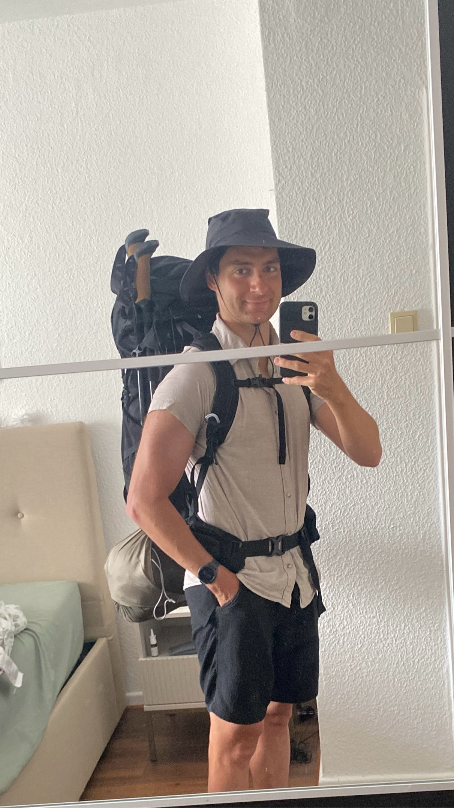

Ein Reisebericht durch die Alpen
Der erste Tag lieferte keine Erkenntnisse, von denen ich noch nicht weiß, dass ich sie haben werde. Es war eine normale Wanderung, wie jede andere auch. Einsamkeit oder extreme Ruhe verspürte ich nicht. Eher ungewohnt viel Anstrengung. Vielleicht ist das die Erkenntnis des ersten Tages: Um eine Wanderung mit viel Gepäck genießen zu können, sollten die Steigungen in beide Richtungen human bleiben. Ich habe eigentlich nicht damit gerechnet an meinem geplanten Ziel anzukommen, doch am Ende lief alles optimal.

Noch im Zug waren sich die Wetterberichte nicht ganz einig, ob es denn noch gewittern würde, oder nicht. Der Plan war daher in Abschnitten die Tour angehen. Schnell aufs Stanserhorn hoch, und erneut nach dem Wetter schauen. 4h 15min sagt das Schild. 2h dachte ich mir. Vollkommen überschätzt. Bereits auf der Hälfte hatte ich 90 min auf der Uhr und konnte mein T-Shirt auswringen. Nach etwas über 3h war ich dann oben. Also hieß es Wetterbericht schauen und auf der anderen Seite ein Stück weit absteigen.
[Foto: Gratweg & Ausblick]
Dort, bevor es wieder hoch auf 2000m über den Grat ging, schaute ich wieder auf das Wetter. Alles gut, weit und breit keine Gewitter in Sicht. Also startete mein letzter Abschnitt bis hin zum Campingplatz. Dort angekommen fand ich ideale Bedingungen vor. Wasser, Toilette, flache Wiese. Ich war sehr zufrieden, aber doch auch sehr erschöpft. Dementsprechend früh ging ich schlafen.
[Foto: Zelt auf der Almwiese]
Inzwischen ist der nächste Morgen und ich sitze in der Morgensonne. Mein Handy ist platt, dementsprechend konnte ich kein Foto vom Sonnenaufgang machen. Daher hier die Beschreibung: Ich blicke über eine kleine Alm auf mein Zelt. Um mich herum ziehen sich grüne Hänge dem Himmel entgegen und bilden einen Kessel der Ruhe. Eine Ruhe, die nur von den Glocken der Kühe durchbrochen wird. Nach Osten öffnet sich der Kessel und lässt das Aufgehen der Sonne erahnen. Eingehüllt von Nebelschwaden ragen in der Ferne die Gipfel weiterer Berge auf. Dahinter ist überall, wo der Horizont freigegeben wird, eine dünne orangene Linie zu erkennen. Zwei einzelne Wolken, die an der Unterseite zu brennen scheinen, sind die Vorboten des nahenden Sonnenaufgangs.
[Foto: Zelt im Morgenlicht]
Eine Katze gesellt sich zu mir und will ziemlich aufdringlich gestreichelt werden. Während ich ihr den Kopf kraule, taucht sie auf. Zunächst wirkt es wie Glut, die sich über den Kamm des gegenüberliegenden Berges gießt, doch dann steigt sie immer höher. Befreit vom verdeckenden Berg, taucht sie meinen Kessel in Licht und Wärme. [...] Inzwischen ist eine Stunde vergangen und die Wärme wird etwas viel. Also werde ich mich fertig machen und Etappe 2 angehen.
[Foto: Ich werfe einen Schatten auf den Hang]
Ich habe keine 900m gemacht und doch mache ich die erste Pause. Heute ist bereits eine ganz andere Stimmung. Ich habe mehr innere Ruhe. Mir ist es egal, wie weit ich heute komme. Es gibt keine Gewitterwarnungen und die Sonne scheint. Ich sitze auf einem Stein und genieße es. Diese Ruhe, diese Stressfreiheit, diese Sicht.
[Foto: Der Kamm zieht mich tiefer in die Bergwelt]
Vor mir liegt mein Weg, immer über den Grat, tiefer in die Bergwelt hinein. Im Schatten fallen steile Hänge nach Westen ab. Auf der anderen Seite strahlt die Sonne auf schroffe Felsen. Ein ständiges Auf und Ab prägt den Weg. Drei Erhebungen weiter kann ich einen Menschen erkennen, der ebenfalls innehält. Hinter diesem Gratweg ragen vergletscherte Riesen im Süden auf. Bäume tragen sie nicht mehr. Lediglich karge Steinwände und das ewige Eis prägen ihre Hänge. Die gewaltige Natur, so ausgesetzt, so wild, so lebensfeindlich. Und doch erkennt man den Menschen und seinen Versuch sie zu zähmen. Eine Liftanlage verschwindet in den Wolken, die um die Gipfel herumtanzen. Daneben, wie mit einem Lineal gezogen, ein weißes Band, dass sich über einen kleinen Teil dem Tal entgegenzieht. Skifahren im Sommer. Muss das sein? Es ist optisch ein Schandfleck in der sonst so unzugänglichen Natur. Ich mache mich weiter. Dem Grat folgen, tiefer ins Herz der Alpen hinein.
Auf und Ab, wie der Weg, so die Stimmung. Es folgten auf der Gratwanderung weitere wunderschöne Passagen. Zudem musste ich auch durch eine Passage, die durch mein Gepäck gar nicht so einfach war. Immer wieder musste ich mich auf engstem Raum drehen, damit der Rucksack gut durch die Felsen kam. Nach dem seilgesicherten Abschnitt ging es dann über eine Schafsweide. Ein Schild wies darauf hin, dass die Lamas als Beschützer da sind. Eines von diesen versperrte mir dann auch den Weg. Als ich näher trat, machte es diesen jedoch frei.
[Foto: Das neugierige Lama auf dem Wanderweg]
Nicht so eine Gruppe von Schafen, die erst auf dem Weg vor mir her trottete und irgendwann darauf auch keine Lust mehr hatte und stehenblieb. Auch ein Annähern auf 20cm veränderte nichts an diesem Verhalten. Also musste ich durchs Gelände ausweichen. Danach ging es dann vorrangig bergab. Meine Stimmung leider auch. Der Weg wurde optisch weniger schön und anstrengend zu laufen. Der Rucksack ist auch nicht so passend für meine Hüfte, weswegen er ziemlich auf meine Hüftknochen drückt. Aber die Aussicht auf Mittagszeit samt etwas zu essen hielt mich in Bewegung. Leider ist das kalt aufgegossene Couscous Soja Granulat kein Highlight. Ich schaffte nicht einmal die ganze Portion und stieg lieber auf Bananenchips um. Neben mir auf der Bank versuche ich verzweifelt in der Sonne meine Powerbank zu laden. Leider klappt das nicht so recht. Mein Handy ist bereits leer, und meine Uhr auch fast. Der Weg ist an sich ausgeschildert, aber ich habe keine Möglichkeit auf eine Wetterprognose zu schauen und Lara zu schreiben wie es läuft. Falls das gar nichts wird, habe ich aktuell noch keine Lösung. Gleich geht es noch einmal 300hm hoch und dahinter wieder 300hm runter, dann bin ich am Ziel. Wo ich dort schlafen kann, weiß ich noch nicht.
Meine Stromversorgung machte mir zunehmend Sorgen. Die Powerbank lag 50 Minuten in der direkten Mittagssonne und war danach in der Lage mein Handy um 3% zu laden. Mir sank daher etwas ein Stein, insbesondere, weil ich nicht einmal ein Kabel habe, das man an eine Steckdose anschließen kann. Ich vertagte das Problem und nahm erst einmal den Aufstieg in Angriff. Vermutlich war ein Mangel an Kohlenhydraten verantwortlich für meine Stimmung zuvor. Im Aufstieg ging es mir wieder gut. Mit der Powerbank auf dem Deckel des Rucksacks machte ich Meter um Meter. Ich wollte zumindest bei Ankunft genug Laden können für eine Nachricht.
Während ich durchaus die Mittagssonne wahrnahm und stetig vor mich hin tropfte, füllte sich mein Motivationsakku. Die Beine machten mit, der Rucksack tat gar nicht mehr weh und ich kam dem Ziel... dem Ziel zügig näher. Dem Ziel... wenn ich eines gehabt hätte. In der Hoffnung in der Zivilisation nutzbare Stromquellen zu finden, lief ich nicht über den Berg und von da hinab ins Tal, sondern außen herum. So landete ich in dem Skidorf Frutt, welches den Eingang des Tals auf 1870m Höhe bildet. Dort begann meine Glückssträhne. Ich lief durch den Ort auf der Suche nach einer Lösung. Wie es der Zufall wollte, fand ich einen kleinen Laden, der tatsächlich auch Ladekabel verkauft. Die Auswahl war begrenzt, aber zumindest Steckdose auf USB-C konnte ich finden. Jetzt fehlte nur noch eine Steckdose. In der Gondelstation gaben mir Schilder den Hinweis auf eine Information. Sicherlich würde es dort Steckdosen geben. Doch vor der Info konnte ich die Powerbank anschließen. Beim Warten schlenderte ich in die Information rein und sah mir die Flyer an. Einer davon informierte über einen kostenlosen Zeltplatz mit Toilettenzugang. Optimal für mich, allerdings hatte ich keine Ahnung wo die besagte Talstation ist, an der der Platz liegen sollte. Am Infoschalter wurde mir geholfen. Nur 1,3 km musste ich laufen um meinen heutigen Schlafplatz zu erreichen. Sogar eine Steckdose befindet sich im Eingangsbereich zu den Toiletten.
Ich baute schnell mein Zelt auf, um den einsetzenden Niesel abzuwehren. Als dieser aufhörte, sortierte ich mich. Ich bin direkt am See, über den See hinweg ragen Felswände hoch, deren Sockel durch das abgebrochene Gestein gebildet werden. Unterhalb der steilen Schotterfelder setzt nach und nach Wiese ein, die sich bis zum See zieht. An einer Flanke des Sees stehen die Hotelburgen des Orts. Auch wenn es die Idylle zerstört, bin ich heute dankbar für dieses Touristenzentrum. Hinter mir erstreckt sich wie Sonnenstrahlen von mir aus zu den umliegenden Gipfeln. #STRECKT führt von hier sanfte Hänge aus dem Tal nach oben. Eine Vielzahl von Liften spannen sich von hier aus. Im Winter ist es sicherlich auch sehr schön hier, wenn das Läuten der hunderter von Kuhglocken durch das Geräusch von Skiern im Schnee ersetzt wird.
[Foto: Sicht über den Melchsee nach Frutt]
Schlafplatz, Strom und die innere Ruhe halte ich. Ich werde organisiert. Jetzt muss ich mich noch waschen. Für die Lage war der See überraschend warm, sodass mir lediglich die Schlammschicht am Boden Probleme bereitete. Von außen muss es witzig ausgesehen haben: Einseifen, schnell wo hinbewegen, wo das Wasser noch nicht mit Schlamm vermischt war, und abwaschen. Diesen Prozess wiederholte ich mehrfach und ging anschließend glücklich mit einem komplett eingeschäumten Kopf wieder an Land. Glücklicherweise fiel mir dies noch vor dem Abtrocknen auf und so ging es wieder rein. Nach dem Waschgang folgte noch das Abendbrot. Tatsächlich schmecken die Reste vom Mittag mit einer kleingeschnittenen Landjäger gar nicht so schlecht.
Ein ganz schönes Auf und Ab heute. Während ich diese Zeilen schreibe, riss gerade noch einmal die Wolkendecke auf und gab die Sonne frei, die in den letzten Momenten ihres Abtauchens hinter den Bergen war. Da die Kühe bis zum letzten Bisschen Tageslicht noch wild am Grasen sind, wird damit das Tal in ihr Konzerthaus verwandelt. Ist es noch zu früh zum Schlafen, was anderes fällt mir aber auch nicht ein. Es gibt einige Menschen in diversen Altersgruppen, aber mit diesen zu connecten ist weder meine Stärke, noch mein Interesse. Außerdem hilft ja alles nichts, ich werde mich schlafen legen.
Es war erst der zweite Morgen und doch war ich bereits besser in allen Abläufen. Zeitstress habe ich sowieso nicht, weil selbst wenn, würde das Zelt-Trocknen alles entschleunigen. Also hing ich alles zum Trocknen an die Ostwand der Liftstation und kümmerte mich im Anschluss um Frühstück und meinen Tagesproviant. Als alles trocken war, packte ich meinen Rucksack und machte mich los.
[Foto: Die Zeltplanen trocknen an der Liftstation]
350 Höhenmeter später fand ich mich auf dem Balmeregghorn wieder, wo ich nun den ersten Eintrag des Tages verfasse. Es ist bemerkenswert, wie kurz die anderen Wanderer hier verweilen, bei diesem atemberaubenden Panorama.
[Foto: Die Sicht den Lift hinab zum Zeltplatz und über den See]
Erhaben fließen sie von den höchsten Kämmen hinab ins Tal. Bewegungslos und doch so zerstörerisch, dass sie Landschaften nach ihrem Willen erschaffen. In der Ruhe liegt die Kraft. Alles, was sie brauchen ist Zeit. Zeit, die sie nicht haben. Licht und Schatten, weißes Eis in der Sonne und schwarze Felsen in der Dunkelheit. Das Antlitz von Jahrtausenden Vergangenheit, die traurige Vision von Jahrzehnten Zukunft. Überall in die zerklüfteten Scharten und Täler gegossen nehmen sie der Landschaft ihre Konturen. Hier, oberhalb der Wälder und Wiesen, wo eine Gruppe von Adlern in der Thermik der angestrahlten Ostwand ihre Kreise ziehen, sind sie es, die dem Panorama seinen Kontrast geben. Felsen, ein paar kleine Wolken am Gipfel, Eis und der unendlich blaue Himmel. Über allem thront die Sonne. Sie ist Gebieter unseres Schicksals. Selbst die erdigen Majestäten aus ewigem Eis beugen sich ihr. Sie ist Energie, sie ist Leben, sie ist der bringende Feind. Sie ist Kontrast.
[Foto: Ich verfasse Texte vor dem Antlitz der Gletscher]
In weiteren Tagesverlauf gab es keine allzugroßen Wendungen. Über einen kleinen Kammweg führte meine Route mich zurück in das Hochtal, aus dem ich gekommen bin. So schön die Sicht von dem Weg aus war, konnte sie nicht mit dem konkurrieren, das ich zuvor am Gipfel gesehen hatte. Technisch sehr einfach bis fast schon barrierefrei ging es eine ganze Weile weiter.
[Foto: Bunte Almblumen ziehen sich über die Wiesen]
Als es wieder ein schmalerer Pfad durchs Gelände war, musste ich der Höhe, dem Gewicht des Rucksackes und den Anstrengungen des Vortags Tribut zollen. Mühsam und mit etlichen kleinen Pausen näherte ich mich dem vermutlich höchsten Punkt des Tages. Ein Mann, der sein Fahrrad schob, überholte mich. Was er auf diesem Weg verloren hatte, fragte nicht nur ich mich. Von hinten konnte ich mir ansehen, wie jede ihm entgegenkommende Person genau diese Frage stellte. Alle haben sie eine Antwort bekommen. Nur ich, der die ganze Zeit hinter ihm war und im Moment des Überholens zu schüchtern war, wusste es nicht.
Dafür war ich bereits vorher über mich hinausgewachsen, als ich ein Ehepaar sah mit über den Rucksack gespannten Solarzellen. Mit diesen waren sie sehr zufrieden. Von Decathlon stammen sie. Ich hätte es wissen müssen. Vielleicht treffe ich die beiden noch mal, da sie den gleichen Weg geplant haben. Weiter auf meiner Reise kam ich schließlich am Pass an und machte mir es dahinter für eine Mittagspause gemütlich.
[Foto: Panorama entlang des Weges]
[Foto: Ein Selfie zur Mittagspause]
Mit bergauf sollte es für den Tag alles gewesen sein. Dachte ich. Ein anderer einsamer Wanderer kam vor mir vorbei und fragte, ob ich ein Bild von ihm machen könne. Während ich dieser Bitte nachkam, erzählte er mir, ich müsse unbedingt den Klettersteig machen, der hier abzweige. Er versicherte mir, dass bis zu der grandiosen Aussicht alles entspannt wanderbar sei. Mit Ausnahme einer 50 m langen Passage hatte er auch recht.
Ich war sehr glücklich, meinen Rucksack unten gelassen zu haben. Ansonsten wäre ich wohl dort schon umgedreht. Ich flog bis zum Grat hoch mit einer Geschwindigkeit, die ich so nicht mehr kannte. Oben angekommen stürzte sich der Berg gefühlt senkrecht bis ins 1,5 km tiefere Engelberg hinab. Gut war die Aussicht, aber so überschwänglich, wie berichtet wurde, hatte ich mehr erwartet.
Ich war mir aber auch nicht sicher, ob ich noch hätte weiter gehen müssen. Da es offiziell ein Klettersteig-Zugang war und ich den Rucksack nicht allzu lange unbewacht im Reich der Kühe liegen lassen wollte, stieg ich wieder ab. Auch das ist unfassbar viel angenehmer ohne die Last auf dem Rücken. Wie groß der Unterschied ist, wurde mir wenig später wieder bewusst. Ich war wieder im Entschleunigungs-Modus angekommen, in dem mich nahezu jeder ohne Gepäck überholte.
Dennoch machte ich einen guten Fortschritt und war bald schon am Jochberghaus, 430 m oberhalb des Trübsee. Von hier wollte ich die Seilbahn ins Tal nehmen. Als aber der See sehr schnell näher zu kommen schien, überlegte ich mir, ob ich nicht doch laufen solle. Ein Blick auf meine Uhr sagte mir, es seien jetzt noch 390m Abstieg. Damit war der Gedanke schnell verworfen. Meter um Meter wurde es auch langsam zur Qual. Zwei Murmeltiere heiterten mich jedoch auf und so kam ich immer noch gut gelaunt im Touristen-Mekka am Trübsee an. Die Seilbahn kostete mich 30 €, damit war ich sehr zufrieden. Ein straffer, flacher Marsch am Fluss entlang führte mich vorbei an der Skisprunganlage und hin zu meinem heutigen Zeltplatz.
[Foto: Die Sprunganlage von Engelberg]
Touristisch voll ausgebaut, bedeutete dies: Lager weiter 49 Franken, dafür konnte ich mich und meine Kleidung schön warm waschen, bevor es morgen wieder für zwei Tage in die Höhe geht.
[Foto: Poesie und Bananenchips am Abend]
[Foto: Ein zufriedener Nici im Zelt]
Aufgrund einer Abdeckung nach Osten startete ich heute etwas später in den Tag. Ich war schließlich darauf angewiesen, dass die Sonne mein Zelt trocknete, bevor ich es einpacken konnte.
[Foto: Das übliche Zelttrocknen am Morgen]
Das Highlight meines Morgens waren zwei frische Äpfel, die ich mir kaufte. Mit Motivation ging es in die letzte "volle" Tour. Nach nicht einmal zwei Kilometern musste ich feststellen, dass meine Beine so langsam anfingen zu streiken. Bei durchgängig 30% hatte der Berg kein Erbarmen mit mir. Es war das erste Mal, dass ich mir einen Podcast anmachte, um die Zeit schneller rumzubekommen. Ansonsten waren die ersten knapp 2h von Bäumen geprägt. Über diesen Waldaufstieg war ich jedoch durchaus glücklich, da es bei über 20°C in der Sonne schnell unerträglich werden würde.
[Foto: Dem Fluss entlang weiter ins Tal]
[Foto: Zwischen den Bäumen wird immer auch mal die Aussicht freigegeben]
Nach besagten knapp 2h näherte ich mich der Bergstation der Seilbahn für die fauleren Urlauber. Der Appetit nach einem Kaiserschmarrn überkam mich und so gab es nach den Äpfeln bereits die zweite gekaufte Mahlzeit des Tages.
[Foto: Eine kleine Portion Kaiserschmarrn als zweites Frühstück]
Ich hatte dort auch ein letztes Mal Netz, deswegen warf ich nochmal einen Blick auf den Wetterbericht. Es sah nicht gut aus. Regen durchmischt mit Gewitter ab 16 Uhr. Es war 12:30 Uhr. Also fasste ich den Plan zügig bis zur letzten bewirtschafteten Hütte zu laufen und von dort weiter zu entscheiden. Trotz des Zeitdrucks ließ ich mir es nicht nehmen, in der Nähe von sich versteckenden Murmeltieren eine Pause einzulegen und auf diese zu warten. Danach ging es weiter zur Hütte. Auf Nachfrage versicherte mir die Hüttenwirtin, dass die Schutzhütte direkt unterhalb vom Pass Gewitterschutz bieten würde. Also füllte ich mein Wasser auf und ging los. Ich weiß nicht, ob es der zweite Apfel oder der Druck des eventuellen Gewitters war, aber meine Beine lieferten Höchstleistung. Die 400 Höhenmeter zur Passhöhe bewältigte ich in 45 Minuten und so kam ich genau mit Einsetzen des Regens an der Hütte an.
[Foto: Die Aussicht aus dem Fenster der Schutzhütte]
Danach machte ich schnell ohne Gepäck die Meter bis zum Pass, um zu schauen, ob dort meine Nachrichten rausgehen würden. Es klappte. Ich konnte auch den Wetterbericht öffnen und sehen, dass wohl immer wieder Regen in das Tal gezogen werden würde. Da der Regen stärker wurde, zog ich mich zurück und aß erstmal meinen täglichen Eintopf. In der Zeit kam ein Schweizer vorbei, der ebenfalls voll bepackt eine Solo-Tour macht. Kurz darauf kam bei erneut einsetzendem Regen ein Pärchen aus einer Hamburgerin und einem Schweizer an und gesellte sich zu mir. Sie wollen auch die Nacht hier oben verbringen und wägen noch ab, ob im Zelt am Pass oder in der Hütte.
Kurz darauf kam auch der andere Schweizer zurück. Er hatte ebenfalls nur am Pass das Internet genutzt und plant hier irgendwo zu nächtigen. Da waren wir schon vier. Ein wenig wie ein Impostor fühle ich mich, dennoch bin ich dankbar über "Gleichgesinnte", auch wenn der Solo-Schweizer offenbar das Doppelte meiner Tagesetappen macht. Ein Hüttenspiel hat leider niemand bei, aber mal sehen, was sich heute noch ergibt. Zumindest bin ich nicht mehr in den Strömen der Touristen unterwegs, die mich seit vorgestern begleiteten.
[Foto: Die Schutzhütte fotografiert vom Pass aus]
Nun neigt sich der Tag dem Ende entgegen. Nach dem Nebel ist es wieder aufgeklart. Das Panorama ist ein Traum in beide Richtungen. Die drei anderen sind dann weiter gezogen. Ich weiß nicht, ob ich das schade oder gut finde. Ein bisschen beides vermutlich. So ist man wieder allein, aber kann die absolute Ruhe genießen. Es ist ein absoluter Traum.
[Foto: Die Aussicht vom Pass während es aufklart]
Trotz der festen vier Wände um mich herum schläft es sich nicht sonderlich gut. Zu warm, zu kalt, zu unbequem. Immer wieder schaue ich auf die Uhr, ob ich bereits aufstehen kann. Am Ende war es dann doch mein Wecker, der mich weckte. 5:50 Uhr. Also hatte ich 26 Minuten bis zum Sonnenaufgang. Ich packte alles in den Rucksack rein. Danach war es endlich soweit. Dafür schleppte ich eine Schaufel mit und baute mir aus einem ausgehobenen Loch und einem Steinkranz als Brille mein Outdoor-Luxus-Klo. Wie wertvoll das ganze ist, wenn man vom Wanderweg aus gesehen werden kann, habe ich am Vortag nicht bedacht. Die Idee war, dass zu der Zeit eh niemand unterwegs sein würde. So war es auch. Auch mein Nachbar schlief noch tief und fest.
[Foto: Feinste Zimmermannskunst beim Bauen der Klobrille]
Als ich am Vorabend den Sonnenuntergang betrachtete, war noch ein meges Treiben am Pass. Vier Leute schauten sich die Hütte an und gingen dann wieder. Ein Schäfer machte mit seinen drei Hunden die Nachtrunde, zwei Mädels kamen von der anderen Seite, pausierten am Pass und gingen dann wieder 200m zurück um sich dort mit ihrem Schlafsack neben den Weg zu legen und ein Junge überschritt den Pass, schaute sich die Hütte an und campte sich 20m daneben. Er schlief aber noch. Die ganze Zeit, während ich von meinem Ausguck den Sonnenaufgang betrachtete. Die beiden Mädels, welche im Gegensatz an der Ostflanke lagen, wurden durch die Sonne geweckt. Lange Zeit schaute ich mir die Sonne an. Dann holte ich mein Gepäck und startete die letzte Etappe. Vom Pass aus konnte man dem Grat noch bis zu einer 150m höheren Spitze folgen. Da ich keine Eile hatte, tat ich dies. Wohlwissend, dass es vermutlich eine Sackgasse war.
[Foto: Einsamkeit am Gipfel auf 2400m]
Oben angekommen schaute ich eine Weile runter, bevor ich einen Mittagsschlaf ansetzte. Podcast an, Hut aufs Gesicht, Augen zu. Der Podcast war jedoch zu interessant und so blieb ich die volle Stunde wach. Danach bot sich mir ein interessantes Bild. Mein Nachbar war wach, stand neben seinem Zelt, auf der anderen Seite zwei interessierte Kühe. Ob sie ihm gerecht wurden, weiß ich leider nicht. Ich stelle es mir aber unangenehm vor.
[Foto: Ein paar letzte Stufen bergauf im Abstieg]
Dann ging es an den Abstieg. 1000 Höhenmeter, die sich recht flott wegwandern ließen. Und so war ich pünktlich zur ersten Fahrt nach der Mittagspause in der Gondel. In diese passten acht Leute. Wir waren 8. Vielleicht tat die Hitze ihren Beitrag, aber da die Eltern mit einer Tüte vorbereitet waren, nehme ich an, dass ihrem Sohn öfter schlecht wird. Und so kam es, dass dieser sich ziemlich übergeben musste. Alles kontrolliert, alles in die Tüte. Ich war begeistert davon, wie lässig das alle genommen haben. Dann bekam ich auch ein komisches Gefühl. Psyche, dachte ich mir. Man riecht überhaupt nichts, also dachte ich recht allein darüber nach. Naja, so schlimm war es ja nicht. Dann ging es schnell. Ich überlegte, ob ich eine Tüte habe, schaute aus dem zum Spalt geöffneten Fenster, mir wurde unfassbar heiß.
"Are you ok? Gehts dir gut?"
Wo bin ich? Ich brauche einen kleinen Moment um zu realisieren. Zero... ich war, ich war in der Seilbahn. Ich hockte am Boden und mit der Hand umklammerte ich ein Geländer über mir.
Ich war glücklich. Mir war nicht mehr flau im Magen und der Schwindel war auch vorbei. Erst im zweiten Gedanken realisierte ich, dass ich gerade ohnmächtig geworden bin. Ein komisches Gefühl. Es überwog jedoch die Freude, dass es mir wieder gut ging, deswegen war ich glaube ich der am wenigsten geschockte Fahrgast.
Nach wie vor kann ich nicht sagen, woran es lag. Schneller Höhenverlust und damit Druckunterschiede, Dehydration, Hitze, alles zusammen.
An der Mittelstation, die fast ganz unten war, setzte ich mich erst einmal hin und trank etwas. Die Liftmitarbeiter schauten immer wieder nach mir und fragten, ob ich etwas bräuchte. Es ging mir jedoch bestens. Also setzte ich meine Fahrt fort, auch wenn ich das letzte Stück allein in der Kabine war. Aber es blieb dabei, mir ging es gut. Unten blieb ich dennoch 20 min sitzen, bevor ich weiter zur Unterkunft lief.
Alles lief super, und doch bleibt ein komisches Gefühl. Was, wenn das in einer anderen Situation passiert?
Man sollte sich nicht zu sehr einen Kopf machen. Ich beendete die Wanderung mit Freude, Sehnsucht nach einer Dusche und dem Wissen, das nochmal zu machen. Vermutlich jedoch nicht allein, sondern mit meinem Otter.